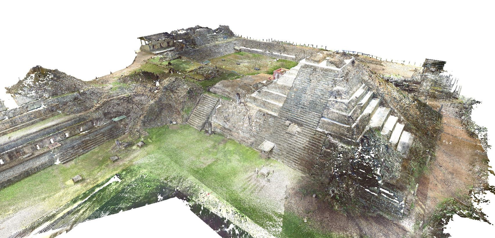
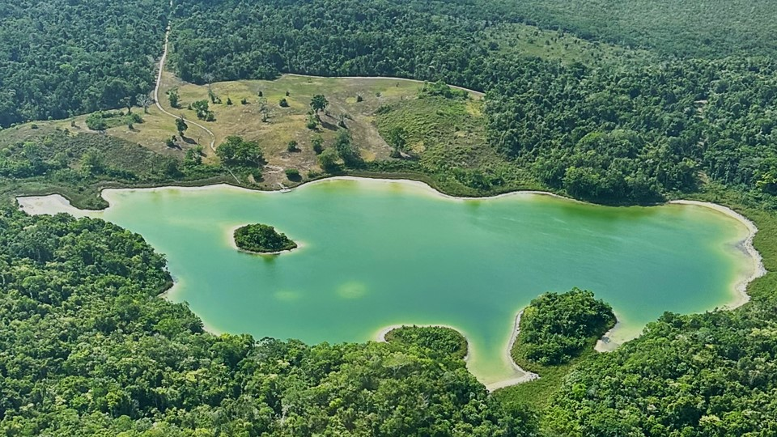
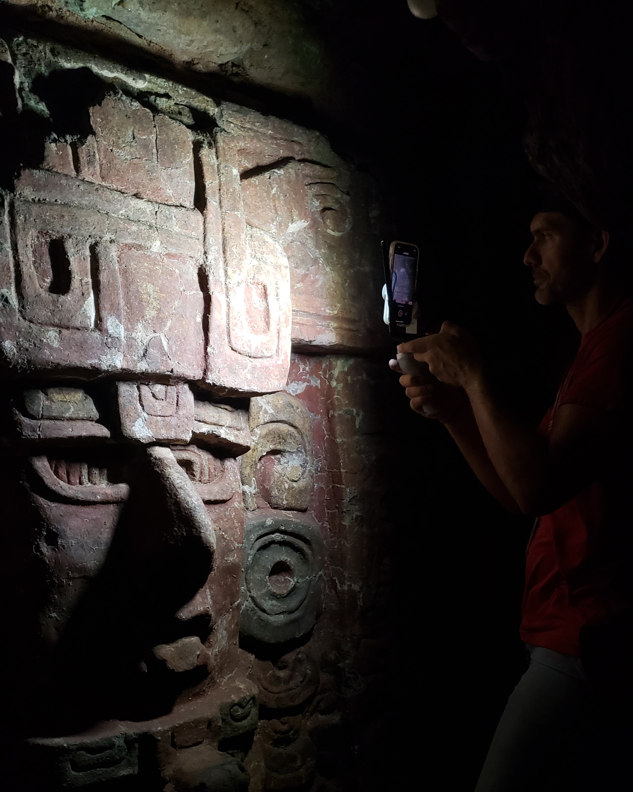

Researching ancient landscapes through geospatial science
My research examines how ancient communities engineered, inhabited, and transformed landscapes over time. I integrate both terestrial and aerial lidar, drones, GIS, 3D modeling, excavation, coring, soils, paleoenvironmental reconstruction, and digital heritage to reconstruct long-term human–environment interaction in the Maya lowlands.
My current work focuses on ancient Maya landscapes in Belize, Guatemala, and Honduras, including construction, water management, wetlands, settlement patterns, lidar-based archaeological prospection, and environmental traces of long-term land use. I am especially interested in how computational and geospatial methods can make archaeological and environmental records more accessible for research, teaching, conservation, and public engagement.
My future research program will be organized through the CAVE Lab — Computational Archaeology and Visualized Environments — which will connect field-based archaeology, Digital Archaeology, GIS, environmental analysis, student training, and immersive digital visualization.
Ancient Engineered Landscapes
Reservoirs, canals, terraces, civic spaces, modified terrain, and settlement systems.

Environmental Legacies
Wetlands, lake cores, soils, vegetation, fire histories, and long-term landscape change.

Digital Geospatial Heritage
LiDAR, drones, TLS, 3D modeling, VR, 3D printing, StoryMaps, and digital twins.
